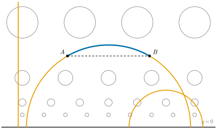
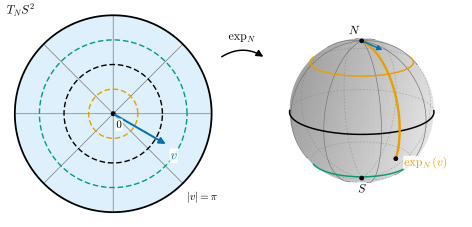
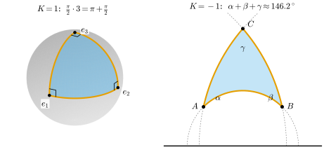
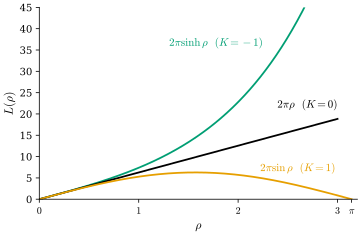

0.8 Riemannian Geometry: Measuring on a Manifold
Goals
- Riemannian metric이 tangent space마다 주어진 inner product이고 first fundamental form의 일반화임을 설명하고, length와 distance를 계산할 수 있다.
- geodesic, exponential map, logarithm map을 sphere 위에서 식과 그림으로 설명할 수 있다.
- curvature의 의미를 geodesic triangle의 내각의 합과 geodesic circle의 둘레로 설명하고, 세 model space를 비교할 수 있다.
- \(\mathrm{SO}(3)\) 위의 평균, Riemannian optimization, hyperbolic embedding이 이 개념들을 어떻게 쓰는지 말하고, 관심사에 맞는 깊은 장을 고를 수 있다.
Prerequisites
- Section 0.6: manifold, tangent space, \(\mathrm{SO}(3)\)와 Rodrigues formula (0.6.7)
- Section 0.7: covector와 \(df\), \(n\)-form의 적분
- Section 0.3(first fundamental form), Section 0.4(Gaussian curvature), Section 0.5(geodesic, parallel transport, Gauss–Bonnet theorem)
Motivation
Section 0.7에서 \(df\)는 vector가 아니라 covector라는 것을 보았다. 화살표 모양의 gradient를 얻으려면 covector를 vector로 바꾸는 규칙, 곧 inner product가 필요하다. Section 0.6의 manifold에는 아직 길이도 각도 없다. chart는 “어디가 어디 옆인지”만 알려 줄 뿐이다.
surface에서는 답을 이미 보았다. Section 0.3의 first fundamental form은 \(\R^3\)의 inner product를 tangent plane에 제한한 것이었고, Section 0.5에서 geodesic과 Gaussian curvature가 모두 이것만으로 정해진다는 것을 보았다. 그렇다면 바깥 공간 없이 각 tangent space에 inner product를 직접주면 된다. 이것이 Riemannian geometry의 출발점이다.
Riemannian Metrics
Definition 0.8.1 (Riemannian metric, simplified). smooth manifold \(M\)의 각 점 \(p\)에서 tangent space \(T_pM\)의 inner product \(\inner{\cdot}{\cdot}_g\)를 주고, \(p\)에 대해 매끄럽게 변하게 한 것 \(g\)를 Riemannian metric(리만 계량)이라 한다. 짝 \((M, g)\)를 Riemannian manifold(리만 다양체)라 한다. chart에서는 symmetric positive definite matrix \((g_{ij}(x))\)로 쓰고
이다. 정확한 정의(smooth symmetric 2-tensor field)와 존재 증명은 Section 21.1.
Example 0.8.2 (three metrics).
- (a) Euclidean metric(유클리드 계량): \(\R^n\)에서 \(g_{ij} = \delta_{ij}\).
- (b) induced metric(유도 계량): \(M \subseteq \R^N\)이면 \(\R^N\)의 inner product를 \(T_pM\)에 제한한다. 반지름 \(r\)인 sphere의 standard parametrization에서는 first fundamental form 그대로(Example 0.3.6) \(E = r^2\), \(F = 0\), \(G = r^2\sin^2\theta\)이므로 \(g = r^2\,d\theta^2 + r^2\sin^2\theta\,d\varphi^2\)이다.
- (c) hyperbolic plane(쌍곡평면): \(\mathbb{U}^2 = \{(x, y) : y \gt 0\}\)에서 \(g = (dx^2 + dy^2)/y^2\). Euclidean inner product를 \(y^2\)로 나눈 것이므로 각은 Euclidean과 같고 길이는 \(1/y\)배다. boundary \(y = 0\)에 가까울수록 같은 Euclidean 길이가 더 길게 재진다(Figure 0.8.1). 그런데 \(\mathbb{U}^2\) 전체를 길이를 보존하면서 \(\R^3\) 안의 surface로 실현하는 것, 곧 \(\R^3\)으로 가는 isometric immersion(등거리 몰입)은 없다. 이것이 Hilbert's theorem(힐베르트 정리)이다 [dC §5-11]. 바깥 공간 없이 metric을 주는 정의가 필요한 이유 중 하나다.
Verification: verify/v-0-8-riemannian.py
metric이 있으면 곡선의 길이와 두 점 사이의 거리를 정의할 수 있다:
여기서 \(\inf\)는 \(p\)에서 \(q\)로 가는 모든 곡선 \(\gamma\)에 대해 취한다. 예를 들어 \(\mathbb{U}^2\)에서 \((0, 1)\)부터 \((0, e)\)까지의 수직 선분은 \(\int_1^e dy/y = 1\)이다. 같은 계산으로 boundary \(y = 0\)은 무한히 멀다(Exercise 0.8.1).

metric이 있으면 covector를 vector로 바꿀 수 있다. 함수 \(f\)의 gradient(기울기) \(\grad f\)는 모든 \(v\)에 대해
를 만족하는 vector다(\(g^{ij}\)는 \((g_{ij})\)의 inverse matrix의 성분). 같은 \(df\)라도 metric에 따라 gradient의 방향이 달라진다. \(\mathbb{U}^2\)에서는 \(\grad f = y^2(f_x, f_y)\)다. \(M \subseteq \R^N\)에 induced metric을 주면, \(\grad f\)는 \(f\)를 주변으로 확장한 함수의 Euclidean gradient를 \(T_pM\)으로 orthogonal projection한 것이다. 또 metric은 volume form(체적형식) \(dV_g = \sqrt{\det(g_{ij})}\,dx^1 \wedge \cdots \wedge dx^n\)을 주므로 Section 0.7의 방식으로 함수를 적분할 수 있고, Laplacian \(\Delta = \divg\grad\)도 정의된다(Section 21.6).
Connections, Geodesics, and the Exponential Map
곡선이 “곧다”는 것은 velocity가 변하지 않는다는 뜻이다. 그런데 \(\gamma'(t)\)와 \(\gamma'(t + h)\)는 서로 다른 tangent space에 있으므로 바로 뺄 수 없다. 서로 다른 점의 tangent vector를 비교하는 규칙이 connection(접속) \(\nabla\)다. \(\R^3\) 안의 surface에서는 보통의 미분을 tangent plane으로 projection한 것이 그 규칙이었다(Section 0.5의 covariant derivative와 parallel transport).
Theorem 0.8.3 (fundamental theorem of Riemannian geometry). Riemannian manifold \((M, g)\)에는 metric과 compatible하고(parallel transport가 길이와 각을 보존하고) torsion이 없는 connection이 정확히 하나 있다. 이것을 Levi-Civita connection(레비치비타 접속)이라 한다. 여기서는 두 조건의 정확한 정의를 생략했다(Section 22.5).
Levi-Civita connection은 chart에서 Christoffel symbols \(\Gamma^k_{ij}\)(metric의 첫째 미분으로 정해진다)로 쓰인다. velocity가 변하지 않는 곡선, 즉 \(D_t\gamma' = 0\)인 곡선이 geodesic(측지선)이고, 성분으로는
이다. 이것은 ordinary differential equation이므로 점 \(p\)와 처음 velocity \(v \in T_pM\)을 주면 geodesic \(\gamma_v\)가 하나 정해진다. geodesic은 국소적으로 가장 짧은 곡선이다. sphere에서는 great circle, \(\mathbb{U}^2\)에서는 세로선과 \(x\)축 위에 중심을 둔 반원이다.
\(v\) 방향으로 “시간 \(1\)만큼” 가는 geodesic의 끝점을 \(\exp_p(v) = \gamma_v(1)\)이라 하고, \(\exp_p\colon T_pM \to M\)을 exponential map(지수사상)이라 한다. \(\gamma_v\)의 속력은 \(\abs{v}_g\)로 일정하므로 \(\exp_p(v)\)는 \(p\)에서 \(v\) 방향으로 길이 \(\abs{v}_g\)만큼 간 점이다. \(0\) 근처에서 \(\exp_p\)는 diffeomorphism이고, 그 역 \(\log_p\)를 logarithm map(로그사상)이라 한다. \(\log_p q\)는 “\(q\)가 \(p\)에서 어느 방향으로 얼마나 떨어져 있는가”를 tangent vector로 준다. unit sphere에서는
이다. 여기서 \(\theta = \arccos\inner{p}{q}\)이고 \(q \ne \pm p\)다(\(q = p\)이면 \(\log_p p = 0\)). \(d_g(p, q) = \abs{\log_p q} = \theta\)이다(Figure 0.8.2). \(\abs{v} = \pi\)인 모든 \(v\)는 대척점 \(-p\)로 가므로 \(\log_p(-p)\)는 하나로 정해지지 않는다. 이런 점을 cut point(절단점)라 한다(Section 23.5).

Remark 0.8.4 (\(\exp\) on \(\mathrm{SO}(3)\)). Example 0.6.7의 \(\exp\)는 행렬 지수, 곧 Lie group의 exponential map이었다. Riemannian exponential map과는 일반적으로 다른 개념이다(Section 20.3). 그러나 \(\mathrm{SO}(3)\)에 tangent vector(행렬) \(A, B\)에 대해 \(\inner{A}{B} = \tfrac12\tr(A^{\mathsf T}B)\)인 metric을 주면 두 개념이 일치한다. 이 metric은 왼쪽 곱과 오른쪽 곱 모두로 보존되는 bi-invariant metric(양불변 계량)이고, \(\abs{[\omega]_\times} = \abs{\omega}\)이며, \(I_3\)을 지나는 geodesic이 정확히 \(t \mapsto \exp(t[\omega]_\times)\)이다. 따라서 \(\exp_{I_3}\)은 Rodrigues formula (0.6.7)이고, 두 회전 사이의 거리는 \(d(R_1, R_2) = \abs{\log(R_1^{\mathsf T}R_2)}\), 곧 \(R_1^{\mathsf T}R_2\)의 회전각 \(\theta \in [0, \pi]\)이다.
Verification: verify/v-0-8-riemannian.py
Curvature
평면에서는 vector를 closed curve를 따라 parallel transport해도 처음 그대로 돌아온다. sphere에서는 돌아올 때 회전해 있었다(Example 0.5.7). 이 “작은 고리를 한 바퀴 돈 뒤의 회전”을 무한소로 잰 것이 curvature다. Lee의 부호 규약으로
를 curvature operator(곡률 연산자)라 한다(이 \(R\)은 회전 행렬이 아니다). 두 방향으로 미분하는 순서를 바꾸면 얼마나 달라지는지를 잰다. 여기에 metric을 붙여 수로 만든 \(\Rm(X, Y, Z, W) = \inner{R(X, Y)Z}{W}_g\)가 curvature tensor(곡률텐서)다.
curvature tensor는 성분이 많으므로, 그림으로 읽을 때는 2차원 방향마다 수 하나를 주는 양을 쓴다. \(p\)에서 두 tangent vector \(v, w\)가 펼치는 평면 방향으로 나가는 geodesic들은 작은 surface를 이룬다. 그 surface의 Gaussian curvature가 sectional curvature(단면곡률) \(K(v, w)\)이고, 식으로는 \(K(v, w) = \Rm_p(v, w, w, v) / \big(\abs{v}_g^2\abs{w}_g^2 - \inner{v}{w}_g^2\big)\)이다(Section 24.3). 2차원 manifold에는 평면 방향이 하나뿐이므로 sectional curvature가 곧 Section 0.4의 Gaussian curvature \(K\)다. 그래서 \(\mathbb{U}^2\)의 curvature도 바깥 공간 없이 metric만으로 계산되고, 값은 \(K \equiv -1\)이다. sectional curvature를 평균한 Ricci curvature와 scalar curvature도 있다(Section 24.4).
curvature를 눈으로 보는 가장 쉬운 방법은 geodesic triangle이다. Section 0.5의 Gauss–Bonnet theorem (0.5.2)를 다시 쓰면 내각이 \(\alpha, \beta, \gamma\)인 geodesic triangle \(T\)에 대해
이다. \(K \gt 0\)이면 내각의 합이 \(\pi\)보다 크고, \(K = 0\)이면 \(\pi\), \(K \lt 0\)이면 \(\pi\)보다 작다(Figure 0.8.3).

curvature가 상수인 세 공간이 model space(모형공간)다: 반지름 \(r\)인 sphere(\(K = 1/r^2\)), Euclidean space(\(K = 0\)), hyperbolic space(\(K = -1\), 모형 \(\mathbb{U}^n\)이나 Poincaré ball \(\mathbb{B}^n\)). 한 점에서 거리가 \(\rho\)인 점들이 이루는 geodesic circle(측지원)의 둘레는 차례로
이다(Figure 0.8.4). positive curvature에서는 \(p\)에서 퍼져 나간 geodesic들이 다시 모이고(sphere의 meridian은 남극에서 만난다), negative curvature에서는 지수적으로 벌어진다. geodesic의 모임과 벌어짐을 정량적으로 다루는 것이 Jacobi field다(Section 26.3).

Where to Go Next
Tour는 여기서 끝난다. 깊은 장(Chapter 1–26)은 Tour에서 단순화한 정의와 생략한 증명을 처음부터 정확하게 쌓는다. 관심사에 따라 다음 순서로 읽기를 권한다. 어느 순서로 읽든 Chapter 1–Chapter 3(linear algebra, calculus, topology의 준비)을 먼저 훑어 두면 편하다. 아래 순서는 지름길이므로, 막히면 그 장 개요의 Builds on으로 돌아간다. 특히 Part III은 Chapter 13–18을 바탕으로 한다.
- 처음부터 끝까지 엄밀하게. Chapter 1부터 차례로 읽는다. Part I(curve와 surface) → Part II(manifold) → Part III(Riemannian geometry) 순서다.
- mesh, normal, curvature, geodesic distance를 다루고 싶다면. Chapter 4–5(curve의 curvature) → Chapter 6–8(surface, first fundamental form, Gaussian·mean curvature) → Chapter 9–10(geodesic, Gauss–Bonnet). 준비로는 Chapter 2가 특히 중요하다.
- \(\mathrm{SO}(3)\)와 pose를 다루고 싶다면. Section 0.6 → Chapter 11(chart, smooth structure, \(\RP^n\)) → Chapter 12(smooth map, diffeomorphism) → Chapter 13(tangent space, differential) → Section 14.4(regular value theorem: \(\mathrm{SO}(3)\)가 manifold인 이유) → Chapter 15(vector field, flow, Lie bracket) → Chapter 20(Lie group, Lie algebra, exponential map) → Chapter 21–23(metric, geodesic, \(\exp\)).
- gradient field, Poisson editing, discrete exterior calculus. Section 1.3(dual space) → Chapter 16–19(covector, differential form, Stokes's theorem, de Rham cohomology) → Section 21.5–21.6(gradient, divergence, Laplacian). manifold의 기초로 Chapter 11–15가 필요하다.
- Riemannian optimization과 manifold 위의 통계(Fréchet mean). Chapter 11–14(manifold, tangent space, embedded submanifold) → Chapter 21(metric, gradient) → Chapter 22–23(connection, geodesic, \(\exp\), completeness) → Chapter 24(curvature: 평균의 유일성과 수렴에 영향을 준다).
- geometric deep learning과 hyperbolic embedding. Section 21.2(sphere와 hyperbolic space의 metric) → Chapter 22–23(connection, geodesic, distance) → Section 24.5(model space).
Summary
- Riemannian metric은 tangent space마다 주어진 inner product이고, surface의 first fundamental form을 바깥 공간 없이 일반화한 것이다. length, distance, gradient, volume, Laplacian이 모두 여기서 나온다.
- Levi-Civita connection은 metric이 정하는 유일한 “곧음”의 규칙이고, geodesic은 velocity가 변하지 않는 곡선이다.
- \(\exp_p\)는 tangent vector를 geodesic을 따라 manifold로 보내고, \(\log_p\)는 그 역이다. \(\mathrm{SO}(3)\)에 bi-invariant metric을 주면 \(\exp\)는 Rodrigues formula이고 거리는 회전각이다.
- curvature는 parallel transport의 어긋남이고, geodesic triangle의 내각의 합과 geodesic circle의 둘레로 드러난다. sphere, Euclidean space, hyperbolic space가 세 model space다.
- 회전의 평균(Fréchet mean), Riemannian optimization, manifold learning, hyperbolic embedding은 모두 이 언어로 쓰인다.
다음 장부터는 깊은 장이다. Tour에서 “여기서는 단순화한다”고 미뤄 둔 정의와 증명을 Chapter 1의 linear algebra부터 다시 차근차근 쌓는다. 위의 Where to Go Next에서 관심 있는 순서를 골라 시작하면 된다.
Quick check
Exercise 0.8.1 ★ \(\mathbb{U}^2\)에서 \((0, 1)\)부터 \((0, e)\)까지의 수직 선분과, \((0, \varepsilon)\)부터 \((0, 1)\)까지의 수직 선분의 \(g\)-length를 구하여라(\(0 \lt \varepsilon \lt 1\)). \(\varepsilon \to 0\)이면 어떻게 되는가?
Solution
\(\gamma(t) = (0, t)\)이면 \(\abs{\gamma'(t)}_g = \abs{(0, 1)}/t = 1/t\)이다. 따라서 첫째는 \(\int_1^e dt/t = 1\), 둘째는 \(\int_\varepsilon^1 dt/t = \ln(1/\varepsilon)\)이다. \(\varepsilon \to 0\)이면 무한대로 간다. Euclidean으로는 가까워 보이는 boundary \(y = 0\)이 \(\mathbb{U}^2\) 안에서는 무한히 멀다.
Verification: verify/v-0-8-riemannian.py
Exercise 0.8.2 ★ unit sphere의 북극 \(N = (0, 0, 1)\)에서 \(v = (\pi/2, 0, 0) \in T_N S^2\)일 때 \(\exp_N(v)\)를 구하여라. 남극 \(S\)에 대해 \(\log_N(S)\)가 하나로 정해지지 않는 이유는 무엇인가?
Solution
(0.8.5)에서 \(\abs{v} = \pi/2\)이므로 \(\exp_N(v) = \cos(\pi/2)N + \sin(\pi/2)(1, 0, 0) = (1, 0, 0)\)이다. 북극에서 \(x\)축 방향으로 meridian을 따라 길이 \(\pi/2\)만큼 가면 적도에 닿는다. \(\abs{v} = \pi\)인 모든 \(v\)에 대해 \(\exp_N(v) = \cos\pi\, N = S\)이므로, \(S\)로 가는 최단 geodesic이 방향마다 하나씩 무수히 많다. 그래서 \(\log_N(S)\)가 하나로 정해지지 않는다(\(S\)는 \(N\)의 cut point).
Verification: verify/v-0-8-riemannian.py
Exercise 0.8.3 ★ (a) unit sphere 위의 geodesic triangle의 세 각이 모두 \(\pi/2\)이면 넓이는 얼마인가? (b) 참인지 거짓인지 판별하여라: “\(\mathbb{U}^2\)에는 내각의 합이 \(\pi\)인 geodesic triangle이 있다.”
Solution
(a) (0.8.7)에서 \(K = 1\)이므로 넓이는 \(3\pi/2 - \pi = \pi/2\)이다. sphere 넓이 \(4\pi\)의 \(1/8\)이고, Figure 0.8.3의 왼쪽 삼각형이 그 예다. (b) 거짓이다. \(K = -1\)이므로 내각의 합은 \(\pi - (\text{넓이})\)이고, 삼각형의 넓이는 양수이므로 합은 언제나 \(\pi\)보다 작다.
Verification: verify/v-0-8-riemannian.py
Exercise 0.8.4 ★ unit sphere 위의 height function \(f(x, y, z) = z\)의 Riemannian gradient를 induced metric으로 구하여라. \((1, 0, 0)\), \((0.6, 0, 0.8)\), \(N\)에서의 값은?
Solution
\(f\)를 \(\R^3\)의 함수로 보면 Euclidean gradient는 \(e_3\)이고, \(T_pS^2 = \{v : \inner{v}{p} = 0\}\)으로의 projection은 \(\grad f(p) = e_3 - \inner{e_3}{p}\,p\)이다. \((1, 0, 0)\)에서는 \(e_3\), \((0.6, 0, 0.8)\)에서는 \((0, 0, 1) - 0.8(0.6, 0, 0.8) = (-0.48, 0, 0.36)\), \(N\)에서는 \(0\)이다. gradient는 meridian을 따라 북극 쪽을 가리키고, 최대점 \(N\)과 최소점 \(S\)에서 \(0\)이다.
Verification: verify/v-0-8-riemannian.py